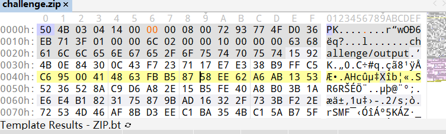

zip伪加密
- 一个zip文件由三部分组成：压缩源文件数据区，压缩源文件目录区和压缩源文件目录结束标志区。
压缩源文件数据区和压缩文件目录区
50 4B 03 04:头文件标记
14 00：解压所需pkware版本
00 00：全局方式位标记（第二位可判断是否进行加密，数字为奇数时表示进行了加密）
所以将50 4B .. .. 14 00 0x中的x改为0，即可解除加密。无加密
压缩源文件数据区的全局加密应当为00 00
且压缩源文件目录区的全局方式位标记应当为00 00假加密
压缩源文件数据区的全局加密应当为00 00
且压缩源文件目录区的全局方式位标记应当为09 00真加密
压缩源文件数据区的全局加密应当为09 00
且压缩源文件目录区的全局方式位标记应当为09 00